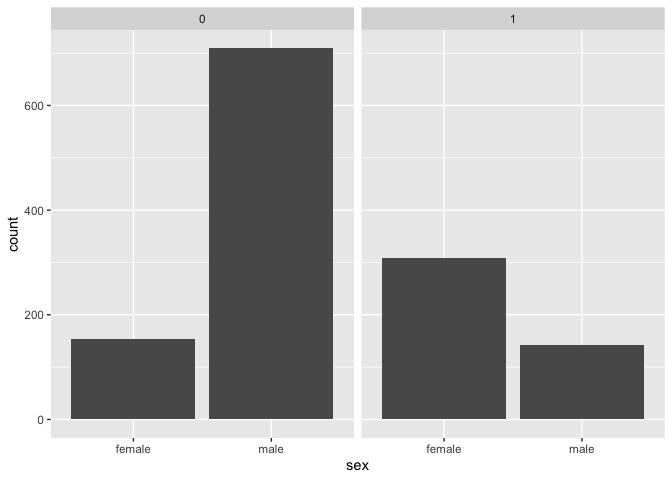
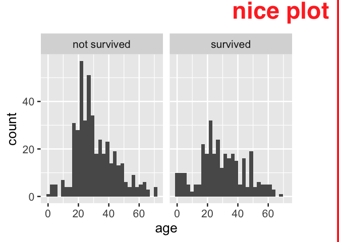

{{ind2cat}} can help analysts translate from an indicator variables to categorical variables that can be used in reporting products. By default, the categorical variable is created from the indicator variable name, resulting in a light weight syntax.
ind2cat’s ind_recode function saves time by automatically creating meaningful categories based on a variable name as shown below:
library(tidyverse)
#> ── Attaching core tidyverse packages ──────────────────────── tidyverse 2.0.0 ──
#> ✔ dplyr 1.1.0 ✔ readr 2.1.4
#> ✔ forcats 1.0.0 ✔ stringr 1.5.0
#> ✔ ggplot2 3.4.1 ✔ tibble 3.2.0
#> ✔ lubridate 1.9.2 ✔ tidyr 1.3.0
#> ✔ purrr 1.0.1
#> ── Conflicts ────────────────────────────────────────── tidyverse_conflicts() ──
#> ✖ dplyr::filter() masks stats::filter()
#> ✖ dplyr::lag() masks stats::lag()
#> ℹ Use the conflicted package (<http://conflicted.r-lib.org/>) to force all conflicts to become errors
library(indicatorrecode)
data.frame(ind_graduated = c(T,T,F)) |>
mutate(cat_graduated = ind_recode(ind_graduated))
#> ind_graduated cat_graduated
#> 1 TRUE graduated
#> 2 TRUE graduated
#> 3 FALSE not graduatedThis can replace the less succinct approach:
Background: indicator variables a common and well understood way to store information.
Indicator variables are often used in data analyses given the ease which with they are created, stored and interpreted. They concisely encode information about the presence or not of a condition for observational units.
see.. https://emilyriederer.netlify.app/post/column-name-contracts/
In exploratory analyses indicator variables, analysts often make a choice between crafting an categorical variable whose values preserve the information that the indicator variable name holds, or using an indicator variable as-is; the later choice may be motivated by time savings.
Problem: Direct use of indicator variables in data products.
When indicator variables are not translated to a categorical analogue in creating data products like tables and visuals, information is often awkwardly displayed and is sometimes lost.

A. Bar labels + axis label preserves information but is awkward
tidytitanic::passengers %>%
count(survived) %>%
knitr::kable(caption = "B. Column header from variable name and 0-1 categories preserves information but is awkward")| survived | n |
|---|---|
| 0 | 863 |
| 1 | 450 |
B. Column header from variable name and 0-1 categories preserves information but is awkward
tidytitanic::passengers %>%
janitor::tabyl(sex, survived) %>%
knitr::kable(caption = "C. Information loss with a two-way table for column variables")| sex | 0 | 1 |
|---|---|---|
| female | 154 | 308 |
| male | 709 | 142 |
C. Information loss with a two-way table for column variables
tidytitanic::passengers %>%
ggplot() +
aes(x = sex) +
geom_bar() +
facet_grid(~ survived)
D. Facetting directly on an indicator variable with popular ggplot2 results in information loss
One-off solution: manual indicator recode, but is repetitive
tidytitanic::passengers %>%
tibble() %>%
mutate(cat_survived = ifelse(survived, "survived", "not survived"),
.before = 1)
#> # A tibble: 1,313 × 6
#> cat_survived name class age sex survi…¹
#> <chr> <chr> <chr> <dbl> <chr> <int>
#> 1 survived Allen, Miss Elisabeth Walton 1st 29 fema… 1
#> 2 not survived Allison, Miss Helen Loraine 1st 2 fema… 0
#> 3 not survived Allison, Mr Hudson Joshua Creighton 1st 30 male 0
#> 4 not survived Allison, Mrs Hudson JC (Bessie Waldo … 1st 25 fema… 0
#> 5 survived Allison, Master Hudson Trevor 1st 0.92 male 1
#> 6 survived Anderson, Mr Harry 1st 47 male 1
#> 7 survived Andrews, Miss Kornelia Theodosia 1st 63 fema… 1
#> 8 not survived Andrews, Mr Thomas, jr 1st 39 male 0
#> 9 survived Appleton, Mrs Edward Dale (Charlotte … 1st 58 fema… 1
#> 10 not survived Artagaveytia, Mr Ramon 1st 71 male 0
#> # … with 1,303 more rows, and abbreviated variable name ¹survived
tidytitanic::passengers %>%
ggplot() +
aes(x = sex) +
geom_bar() +
facet_grid(~ ifelse(survived, "survived", "not survived"))
This solution above also does not address category display ordering; ordering in products will be alphabetical and not reflect the F/T order of the source variable. An additional step to reflect the source variable, using a function like fct_rev, may be required for consistency in reporting.
data.frame(ind_daytime = c(T, F, T, T)) %>%
mutate(cat_survived = ifelse(ind_daytime, "daytime", "not daytime")) %>%
mutate(cat_survived = fct_rev(cat_survived)) %>%
ggplot() +
aes(x = cat_survived) +
geom_bar()
Introducing ind_recode ind_recode() function uses variable name as starting point for human-readable categories
#' ind_recode
#'
#' @param var the name of an indicator variable
#' @param var_prefix a character string that will be ignored when creating the categorical variable
#' @param negator a character string used to create cat_false when cat_false is NULL, default is 'not'
#' @param cat_true a character string string to be used place of T/1/"Yes" for the categorical variable output, if NULL the category is automatically generated from the variable name
#' @param cat_false a character string string to be used place of F/0/"No" for the categorical variable output, if NULL the category is automatically generated from the cat true and the negator
#' @param rev logical indicating if the order should be reversed from the F/T ordering of the indicator source variable, default is FALSE
#'
#' @return
#' @export
#'
#' @examples
#' library(tibble)
#' library(dplyr)
#' tibble(ind_grad = c(0,0,1,1,1 ,0 ,0)) %>%
#' mutate(cat_grad = ind_recode(ind_grad))
#'
#' tibble(ind_grad = c(TRUE,TRUE,FALSE)) %>%
#' mutate(cat_grad = ind_recode(ind_grad))
#'
#' tibble(ind_grad = c("Y", "N")) %>%
#' mutate(cat_grad = ind_recode(ind_grad))
#'
#' tibble(ind_grad = c("y", "n")) %>%
#' mutate(cat_grad = ind_recode(ind_grad))
#'
#' tibble(ind_grad = c("yes", "no")) %>%
#' mutate(cat_grad = ind_recode(ind_grad))
ind_recode <- function(var, var_prefix = "ind_", negator = "not",
cat_true = NULL, cat_false = NULL, rev = FALSE){
if(is.null(cat_true)){
cat_true = deparse(substitute(var)) %>% # use r lang in rewrite
stringr::str_remove(paste0("^", var_prefix)) %>%
stringr::str_replace_all("_", " ")
}
if(is.null(cat_false)){
cat_false = paste(negator, cat_true)
}
# for yes/no case
if(is.character({{var}})){
my_var <- {{var}} %>% as.factor() %>% as.numeric() - 1
}else{
my_var <- {{var}}
}
if(rev){
ifelse(my_var, cat_true, cat_false) %>%
factor(levels = c(cat_true, cat_false))
}else{
ifelse(my_var, cat_true, cat_false) %>%
factor(levels = c(cat_false, cat_true))
}
}to do
- change to Rlang for grabbing function name
- make “Y” “N” a lot stricter - right now we’re assuming a ton!
Basic examples: How to use ind_recode()
library(tibble)
tibble(ind_grad = c(0,0,1,1,1 ,0 ,0)) %>%
mutate(cat_grad = ind_recode(ind_grad))
#> # A tibble: 7 × 2
#> ind_grad cat_grad
#> <dbl> <fct>
#> 1 0 not grad
#> 2 0 not grad
#> 3 1 grad
#> 4 1 grad
#> 5 1 grad
#> 6 0 not grad
#> 7 0 not grad
tibble(ind_grad = c(T,T,F)) %>%
mutate(cat_grad = ind_recode(ind_grad))
#> # A tibble: 3 × 2
#> ind_grad cat_grad
#> <lgl> <fct>
#> 1 TRUE grad
#> 2 TRUE grad
#> 3 FALSE not grad
tibble(ind_grad = c("Y", "N")) %>%
mutate(cat_grad = ind_recode(ind_grad))
#> # A tibble: 2 × 2
#> ind_grad cat_grad
#> <chr> <fct>
#> 1 Y grad
#> 2 N not grad
tibble(ind_grad = c("y", "n")) %>%
mutate(cat_grad = ind_recode(ind_grad))
#> # A tibble: 2 × 2
#> ind_grad cat_grad
#> <chr> <fct>
#> 1 y grad
#> 2 n not grad
tibble(ind_grad = c("yes", "no")) %>%
mutate(cat_grad = ind_recode(ind_grad))
#> # A tibble: 2 × 2
#> ind_grad cat_grad
#> <chr> <fct>
#> 1 yes grad
#> 2 no not gradCustomizability
We believe that ind_recode is useful in quickly translating to a human understandable outcome.
However, addition functionality allows analysts to fully specify their preferences about the categories outputted.
- var_prefix a character string that will be ignored when creating the categorical variable
- negator a character string used to create cat_false when cat_false is NULL, default is ‘not’
- cat_true a character string string to be used place of T/1/“Yes” for the categorical variable output, if NULL the category is automatically generated from the variable name
- cat_false a character string string to be used place of F/0/“No” for the categorical variable output, if NULL the category is automatically generated from cat_true and the negator
- rev logical indicating if the order should be reversed from the F/T ordering of the indicator source variable, default is FALSE
Customization examples
tibble(dummy_grad = c(0,0,1,1,1 ,0 ,0)) %>%
mutate(cat_grad = ind_recode(dummy_grad, var_prefix = "dummy_"))
#> # A tibble: 7 × 2
#> dummy_grad cat_grad
#> <dbl> <fct>
#> 1 0 not grad
#> 2 0 not grad
#> 3 1 grad
#> 4 1 grad
#> 5 1 grad
#> 6 0 not grad
#> 7 0 not grad
tibble(ind_grad = c(T,T,F)) %>%
mutate(cat_grad = ind_recode(ind_grad, negator = "didn't"))
#> # A tibble: 3 × 2
#> ind_grad cat_grad
#> <lgl> <fct>
#> 1 TRUE grad
#> 2 TRUE grad
#> 3 FALSE didn't grad
tibble(ind_grad = c("Y", "N")) %>%
mutate(cat_grad = ind_recode(ind_grad, cat_false = "enrolled"))
#> # A tibble: 2 × 2
#> ind_grad cat_grad
#> <chr> <fct>
#> 1 Y grad
#> 2 N enrolled
tibble(ind_grad = c("y", "n")) %>%
mutate(cat_grad = ind_recode(ind_grad,
cat_true = "graduated"))
#> # A tibble: 2 × 2
#> ind_grad cat_grad
#> <chr> <fct>
#> 1 y graduated
#> 2 n not graduated
tibble(ind_grad = c("y", "n")) %>%
mutate(cat_grad = ind_recode(ind_grad,
cat_true = "graduated",
cat_false = "enrolled"))
#> # A tibble: 2 × 2
#> ind_grad cat_grad
#> <chr> <fct>
#> 1 y graduated
#> 2 n enrolled
tibble(ind_grad = c("yes", "no")) %>%
mutate(cat_grad = ind_recode(ind_grad, rev = TRUE)) %>%
mutate(cat_grad_num = as.numeric(cat_grad))
#> # A tibble: 2 × 3
#> ind_grad cat_grad cat_grad_num
#> <chr> <fct> <dbl>
#> 1 yes grad 1
#> 2 no not grad 2Use in data products like figures and tables
tidytitanic::passengers %>%
ggplot() +
aes(x = ind_recode(survived)) +
geom_bar()
# or
last_plot() +
aes(x = ind_recode(survived, cat_false = "perished"))
# or
last_plot() +
aes(x = ind_recode(survived, cat_false = "didn't", rev = T)) +
labs(x = NULL)
tidytitanic::passengers %>%
ggplot() +
aes(x = sex) +
geom_bar() +
facet_grid(~ ind_recode(survived))
Known Limitations: not for use with magrittr pipe (but base pipe works!)
tidytitanic::passengers %>%
ggplot() +
aes(x = sex) +
geom_bar() +
facet_grid(~ survived %>% ind_recode())
tidytitanic::passengers %>%
ggplot() +
aes(x = sex) +
geom_bar() +
facet_grid(~ survived |> ind_recode())
Afterward
Other questions: 1) Is there already a solution and 2) fundamental problems with this approach?
Please lemme know ’em!
worked example with tidytuesday data, Spam email
https://github.com/rfordatascience/tidytuesday/tree/master/data/2023/2023-08-15
read.csv("https://raw.githubusercontent.com/rfordatascience/tidytuesday/master/data/2023/2023-08-15/spam.csv") %>%
rename(spam = yesno) %>%
ggplot() +
aes(fill = ind_recode(bang>0), x = ind_recode(spam)) +
geom_bar(position = "dodge")
remove_layers <- function(plot, index = NULL){
if(is.null(index)){
plot$layers <- NULL
}else{
plot$layers[[index]] <- NULL
}
plot
}
last_plot_wiped <- function(index = NULL){
plot <- last_plot()
if(is.null(index)){
plot$layers <- NULL
}else{
plot$layers[[index]] <- NULL
}
plot
}
last_plot_wiped() +
geom_bar(position = "fill") # learned along the way:
# learned along the way: as_factor() has different behavior than as.factor()